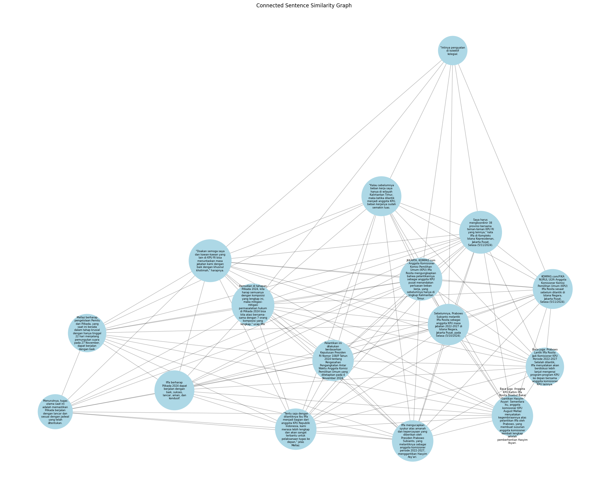

Tugas 4#
Prio Budi Laksono
210411100177
Preprocessing hasil scraping data dari kompas.com
import string
import pandas as pd
import numpy as np
import requests
from bs4 import BeautifulSoup
import csv
# URL dari artikel Berita di IDN Times
url = 'https://nasional.kompas.com/read/2024/11/05/13351201/dilantik-jadi-komisioner-kpu-iffa-rosita-ungkap-beban-kerjanya-makin-luas'
# Membuat permintaan ke URL
response = requests.get(url)
# Inisialisasi data yang akan disimpan
# Mengambil ulang dan membersihkan data yang diminta
artikel_mees = []
if response.status_code == 200:
# Parsing halaman web
soup = BeautifulSoup(response.text, 'html.parser')
# Mengambil judul artikel
title = soup.find('h1').get_text().strip()
# Mengambil tanggal publikasi artikel dan membersihkan spasi berlebih
date_tag = soup.find('div', class_='videoKG-date')
if not date_tag:
# Jika tidak ditemukan, ambil dari div dengan class 'read__time'
date_tag = soup.find('div', class_='read__time')
date = date_tag.text.strip().split('-')[-1].strip() if date_tag else 'Tidak ada tanggal'
# Mengambil isi artikel dengan membersihkan konten tambahan
content_div = soup.find('div', class_='read__content')
article_text = ' '.join([p.text for p in content_div.find_all('p')]) if content_div else 'Tidak ada isi berita'
# Simpan data dalam bentuk dictionary yang telah dibersihkan
artikel_mees.append({
'Title': title,
'Date': date,
'Content': article_text
})
# Membuat dataframe dari data yang telah dibersihkan
data_mees = pd.DataFrame(artikel_mees)
# Menampilkan dataframe yang bersih
data_mees
| Title | Date | Content | |
|---|---|---|---|
| 0 | Dilantik Jadi Komisioner KPU, Iffa Rosita Ungk... | 05/11/2024, 13:35 WIB | JAKARTA, KOMPAS.com - Anggota Komisioner Komis... |
CASE FOLDING#
Merubah content menjadi huruf kecil semua untuk memudahkan pada saat training data nanti
import re
from sklearn.feature_extraction.text import TfidfVectorizer
from sklearn.metrics.pairwise import cosine_similarity
# Proses case folding
def casefolding(Content):
if isinstance(Content, list):
# Jika Content adalah list, terapkan case folding pada setiap elemen
return [str(item).lower() for item in Content]
else:
# Jika Content adalah string, langsung terapkan case folding
return str(Content).lower()
# Terapkan fungsi casefolding pada kolom 'Content'
data_mees['Content'] = data_mees['Content'].apply(casefolding)
data_mees.head()
| Title | Date | Content | |
|---|---|---|---|
| 0 | Dilantik Jadi Komisioner KPU, Iffa Rosita Ungk... | 05/11/2024, 13:35 WIB | jakarta, kompas.com - anggota komisioner komis... |
Menyimpan Data#
csv_filename = "1artikel_kompas.csv"
data_mees.to_csv(csv_filename, index=False, encoding='utf-8')
print(f"Data berita telah disimpan ke {csv_filename}")
data_mees = pd.read_csv("1artikel_kompas.csv", sep=',', encoding='latin1')
data_mees.head()
Data berita telah disimpan ke 1artikel_kompas.csv
| Title | Date | Content | |
|---|---|---|---|
| 0 | Dilantik Jadi Komisioner KPU, Iffa Rosita Ungk... | 05/11/2024, 13:35 WIB | jakarta, kompas.com - anggota komisioner komis... |
Cleansing Data#
def cleansing(Content):
# Menghapus whitespace di awal dan akhir teks
Content = Content.strip()
# Menghapus tanda baca dan karakter khusus
Content = re.sub(f"[{string.punctuation}]", '', Content)
# Menghapus angka
Content = re.sub(r'\d+', '', Content)
# Menghapus huruf tunggal (opsional, tergantung kebutuhan)
Content = re.sub(r"\b[a-zA-Z]\b", "", Content)
# Menghapus karakter-karakter non-standar seperti â
Content = re.sub(r'[^\x00-\x7F]+', '', Content)
# Menghapus spasi ganda
Content = re.sub(r'\s+', ' ', Content)
return Content
# Terapkan fungsi cleansing pada kolom 'Content'
data_mees['Content'] = data_mees['Content'].apply(cleansing)
# Menampilkan 5 baris pertama
data_mees.head(5)
| Title | Date | Content | |
|---|---|---|---|
| 0 | Dilantik Jadi Komisioner KPU, Iffa Rosita Ungk... | 05/11/2024, 13:35 WIB | jakarta kompascom anggota komisioner komisi pe... |
Tokenisasi#
Memecah konten menjadi perkata
import nltk
from nltk.tokenize import sent_tokenize, word_tokenize
import pandas as pd # Ensure you import pandas for DataFrame usage
# Download required resources
nltk.download('punkt')
nltk.download('punkt_tab')
# Ekstraksi kalimat dari konten artikel
sentences = sent_tokenize(article_text)
# Tokenisasi tiap kalimat menjadi term
terms_per_sentence = [word_tokenize(sentence) for sentence in sentences]
# Membuat objek yang menyimpan hasil term dari setiap kalimat
extracted_terms = [{'Sentence': sentence, 'Terms': terms} for sentence, terms in zip(sentences, terms_per_sentence)]
# Menampilkan hasilnya sebagai dataframe
df_terms = pd.DataFrame(extracted_terms)
# Menampilkan dataframe
print(df_terms)
Sentence \
0 JAKARTA, KOMPAS.com - Anggota Komisioner Komis...
1 Iffa mengucapkan syukur atas amanah dan keperc...
2 "Kalau sebelumnya beban kerja saya hanya di wi...
3 Saya harus mengkoordinir 38 provinsi bersama t...
4 KOMPAS.com/FIKA NURUL ULYA Anggota Komisioner ...
5 Baca juga: Prabowo Lantik Iffa Rosita Jadi Kom...
6 Menurutnya, tugas utama saat ini adalah memast...
7 "Intinya penguatan di kolektif kolegial.
8 Kemudian di tahapan Pilkada 2024, kita harap s...
9 Iffa berharap Pilkada 2024 dapat berjalan deng...
10 "Doakan semoga saya dan kawan-kawan yang lain ...
11 Baca juga: Anggota KPU Kaltim Iffa Rosita Dise...
12 Mellaz berharap pengelolaan Pemilu dan Pilkada...
13 "Tentu saja dengan dilantiknya Ibu Iffa menjad...
14 Sebelumnya, Prabowo Subianto melantik Iffa Ros...
15 Pelantikan ini dilakukan berdasarkan Keputusan...
Terms
0 [JAKARTA, ,, KOMPAS.com, -, Anggota, Komisione...
1 [Iffa, mengucapkan, syukur, atas, amanah, dan,...
2 [``, Kalau, sebelumnya, beban, kerja, saya, ha...
3 [Saya, harus, mengkoordinir, 38, provinsi, ber...
4 [KOMPAS.com/FIKA, NURUL, ULYA, Anggota, Komisi...
5 [Baca, juga, :, Prabowo, Lantik, Iffa, Rosita,...
6 [Menurutnya, ,, tugas, utama, saat, ini, adala...
7 [``, Intinya, penguatan, di, kolektif, kolegia...
8 [Kemudian, di, tahapan, Pilkada, 2024, ,, kita...
9 [Iffa, berharap, Pilkada, 2024, dapat, berjala...
10 [``, Doakan, semoga, saya, dan, kawan-kawan, y...
11 [Baca, juga, :, Anggota, KPU, Kaltim, Iffa, Ro...
12 [Mellaz, berharap, pengelolaan, Pemilu, dan, P...
13 [``, Tentu, saja, dengan, dilantiknya, Ibu, If...
14 [Sebelumnya, ,, Prabowo, Subianto, melantik, I...
15 [Pelantikan, ini, dilakukan, berdasarkan, Kepu...
[nltk_data] Downloading package punkt to /root/nltk_data...
[nltk_data] Package punkt is already up-to-date!
[nltk_data] Downloading package punkt_tab to /root/nltk_data...
[nltk_data] Package punkt_tab is already up-to-date!
PROSES TF IDF#
TF-IDF (Term Frequency-Inverse Document Frequency) adalah suatu teknik yang umum digunakan dalam pemrosesan bahasa alami (NLP) dan analisis teks untuk mengukur pentingnya suatu kata dalam sebuah dokumen
import pandas as pd
from sklearn.feature_extraction.text import TfidfVectorizer
from nltk.tokenize import sent_tokenize, word_tokenize
# Assuming we have the article_text
sentences = sent_tokenize(article_text)
terms_per_sentence = [word_tokenize(sentence) for sentence in sentences]
extracted_terms = [{'Sentence': sentence, 'Terms': terms} for sentence, terms in zip(sentences, terms_per_sentence)]
df_terms = pd.DataFrame(extracted_terms)
# Menggabungkan terms menjadi string untuk setiap kalimat
df_terms['Terms_String'] = df_terms['Terms'].apply(' '.join)
# Membuat TF-IDF Vectorizer
tfidf_vectorizer = TfidfVectorizer()
# Fit dan transform data
tfidf_matrix = tfidf_vectorizer.fit_transform(df_terms['Terms_String'])
# Mendapatkan nama-nama feature (terms)
feature_names = tfidf_vectorizer.get_feature_names_out()
# Membuat DataFrame untuk nilai TF-IDF
tfidf_df = pd.DataFrame(tfidf_matrix.toarray(), columns=feature_names)
# Menambahkan kolom Sentence
tfidf_df['Sentence'] = df_terms['Sentence']
# Melelehkan (melting) DataFrame untuk format yang lebih mudah dibaca
melted_tfidf = tfidf_df.melt(id_vars=['Sentence'], var_name='Term', value_name='TF-IDF')
# Menghapus baris dengan nilai TF-IDF 0
melted_tfidf = melted_tfidf[melted_tfidf['TF-IDF'] != 0]
# Mengurutkan berdasarkan nilai TF-IDF tertinggi
melted_tfidf = melted_tfidf.sort_values('TF-IDF', ascending=False)
# Menampilkan hasil
print(melted_tfidf)
Sentence Term TF-IDF
1463 "Intinya penguatan di kolektif kolegial. kolegial 0.483852
1479 "Intinya penguatan di kolektif kolegial. kolektif 0.483852
1015 "Intinya penguatan di kolektif kolegial. intinya 0.483852
2359 "Intinya penguatan di kolektif kolegial. penguatan 0.483852
2979 Saya harus mengkoordinir 38 provinsi bersama t... teman 0.473077
... ... ... ...
3212 Mellaz berharap pengelolaan Pemilu dan Pilkada... yang 0.103650
213 Baca juga: Prabowo Lantik Iffa Rosita Jadi Kom... anggota 0.097804
973 "Tentu saja dengan dilantiknya Ibu Iffa menjad... iffa 0.097609
3211 Baca juga: Anggota KPU Kaltim Iffa Rosita Dise... yang 0.085723
968 Kemudian di tahapan Pilkada 2024, kita harap s... iffa 0.078167
[353 rows x 3 columns]
PROSES COSINE SIMILARITY#
Cosine similarity adalah ukuran untuk menghitung seberapa mirip dua vektor dalam ruang vektor, dengan mengukur sudut antara kedua vektor tersebut. Dalam konteks pemrosesan teks, cosine similarity sering digunakan untuk menghitung seberapa mirip dua dokumen atau kalimat berdasarkan representasi vektornya, misalnya setelah diubah menjadi vektor TF-IDF (Term Frequency-Inverse Document Frequency).
from sklearn.metrics.pairwise import cosine_similarity
import pandas as pd
# Menghitung cosine similarity (asumsi df_terms sudah ada dan tfidf_matrix sudah dihitung)
cosine_sim = cosine_similarity(tfidf_matrix, tfidf_matrix)
# Mengubah cosine similarity menjadi DataFrame untuk visualisasi
cosine_sim_df = pd.DataFrame(cosine_sim, index=df_terms['Sentence'], columns=df_terms['Sentence'])
import numpy as np
import pandas as pd
from scipy.spatial.distance import cosine
# Assuming we have the melted_tfidf DataFrame from the previous code
# If not, uncomment and run the previous code to get melted_tfidf
# Step 1: Pivot the melted DataFrame back to wide format
tfidf_wide = melted_tfidf.pivot(index='Sentence', columns='Term', values='TF-IDF').fillna(0)
# Step 2: Calculate cosine similarity between sentences
num_sentences = len(tfidf_wide)
adjacency_matrix = np.zeros((num_sentences, num_sentences))
for i in range(num_sentences):
for j in range(i, num_sentences): # We only need to calculate upper triangle
if i == j:
adjacency_matrix[i][j] = 1.0 # Sentence is fully similar to itself
else:
similarity = 1 - cosine(tfidf_wide.iloc[i], tfidf_wide.iloc[j])
adjacency_matrix[i][j] = similarity
adjacency_matrix[j][i] = similarity # Matrix is symmetric
# Create a DataFrame for better visualization
adjacency_df = pd.DataFrame(adjacency_matrix,
index=tfidf_wide.index,
columns=tfidf_wide.index)
# Display the adjacency matrix
print(adjacency_df)
# Optional: You can set a threshold to consider only strong connections
threshold = 0.5
adjacency_df_thresholded = adjacency_df.where(adjacency_df > threshold, 0)
print("\nAdjacency Matrix (with threshold):")
Sentence "Doakan semoga saya dan kawan-kawan yang lain di KPU RI bisa menuntaskan masa jabatan kami dengan baik dengan khusnul khotimah," harapnya. \
Sentence
"Doakan semoga saya dan kawan-kawan yang lain d... 1.000000
"Intinya penguatan di kolektif kolegial. 0.030612
"Kalau sebelumnya beban kerja saya hanya di wil... 0.063100
"Tentu saja dengan dilantiknya Ibu Iffa menjadi... 0.103512
Baca juga: Anggota KPU Kaltim Iffa Rosita Diseb... 0.029218
Baca juga: Prabowo Lantik Iffa Rosita Jadi Komi... 0.033335
Iffa berharap Pilkada 2024 dapat berjalan denga... 0.136935
Iffa mengucapkan syukur atas amanah dan keperca... 0.045882
JAKARTA, KOMPAS.com - Anggota Komisioner Komisi... 0.053105
KOMPAS.com/FIKA NURUL ULYA Anggota Komisioner K... 0.030797
Kemudian di tahapan Pilkada 2024, kita harap se... 0.128401
Mellaz berharap pengelolaan Pemilu dan Pilkada,... 0.131388
Menurutnya, tugas utama saat ini adalah memasti... 0.127637
Pelantikan ini dilakukan berdasarkan Keputusan ... 0.044328
Saya harus mengkoordinir 38 provinsi bersama te... 0.108120
Sebelumnya, Prabowo Subianto melantik Iffa Rosi... 0.133401
Sentence "Intinya penguatan di kolektif kolegial. \
Sentence
"Doakan semoga saya dan kawan-kawan yang lain d... 0.030612
"Intinya penguatan di kolektif kolegial. 1.000000
"Kalau sebelumnya beban kerja saya hanya di wil... 0.031853
"Tentu saja dengan dilantiknya Ibu Iffa menjadi... 0.000000
Baca juga: Anggota KPU Kaltim Iffa Rosita Diseb... 0.000000
Baca juga: Prabowo Lantik Iffa Rosita Jadi Komi... 0.000000
Iffa berharap Pilkada 2024 dapat berjalan denga... 0.000000
Iffa mengucapkan syukur atas amanah dan keperca... 0.000000
JAKARTA, KOMPAS.com - Anggota Komisioner Komisi... 0.030404
KOMPAS.com/FIKA NURUL ULYA Anggota Komisioner K... 0.034091
Kemudian di tahapan Pilkada 2024, kita harap se... 0.044920
Mellaz berharap pengelolaan Pemilu dan Pilkada,... 0.000000
Menurutnya, tugas utama saat ini adalah memasti... 0.000000
Pelantikan ini dilakukan berdasarkan Keputusan ... 0.000000
Saya harus mengkoordinir 38 provinsi bersama te... 0.031067
Sebelumnya, Prabowo Subianto melantik Iffa Rosi... 0.037106
Sentence "Kalau sebelumnya beban kerja saya hanya di wilayah Kalimantan Timur, maka ketika dilantik menjadi anggota KPU, beban kerjanya sudah semakin luas. \
Sentence
"Doakan semoga saya dan kawan-kawan yang lain d... 0.063100
"Intinya penguatan di kolektif kolegial. 0.031853
"Kalau sebelumnya beban kerja saya hanya di wil... 1.000000
"Tentu saja dengan dilantiknya Ibu Iffa menjadi... 0.063889
Baca juga: Anggota KPU Kaltim Iffa Rosita Diseb... 0.050671
Baca juga: Prabowo Lantik Iffa Rosita Jadi Komi... 0.075798
Iffa berharap Pilkada 2024 dapat berjalan denga... 0.000000
Iffa mengucapkan syukur atas amanah dan keperca... 0.013562
JAKARTA, KOMPAS.com - Anggota Komisioner Komisi... 0.349678
KOMPAS.com/FIKA NURUL ULYA Anggota Komisioner K... 0.085230
Kemudian di tahapan Pilkada 2024, kita harap se... 0.053970
Mellaz berharap pengelolaan Pemilu dan Pilkada,... 0.031315
Menurutnya, tugas utama saat ini adalah memasti... 0.000000
Pelantikan ini dilakukan berdasarkan Keputusan ... 0.012972
Saya harus mengkoordinir 38 provinsi bersama te... 0.064038
Sebelumnya, Prabowo Subianto melantik Iffa Rosi... 0.092767
Sentence "Tentu saja dengan dilantiknya Ibu Iffa menjadi bagian dari anggota KPU Republik Indonesia, kami merasa lebih lengkap dan akan sangat terbantu untuk pelaksanaan tugas ke depan," jelas Mellaz. \
Sentence
"Doakan semoga saya dan kawan-kawan yang lain d... 0.103512
"Intinya penguatan di kolektif kolegial. 0.000000
"Kalau sebelumnya beban kerja saya hanya di wil... 0.063889
"Tentu saja dengan dilantiknya Ibu Iffa menjadi... 1.000000
Baca juga: Anggota KPU Kaltim Iffa Rosita Diseb... 0.105915
Baca juga: Prabowo Lantik Iffa Rosita Jadi Komi... 0.188606
Iffa berharap Pilkada 2024 dapat berjalan denga... 0.069106
Iffa mengucapkan syukur atas amanah dan keperca... 0.040596
JAKARTA, KOMPAS.com - Anggota Komisioner Komisi... 0.057310
KOMPAS.com/FIKA NURUL ULYA Anggota Komisioner K... 0.037921
Kemudian di tahapan Pilkada 2024, kita harap se... 0.078362
Mellaz berharap pengelolaan Pemilu dan Pilkada,... 0.076782
Menurutnya, tugas utama saat ini adalah memasti... 0.105400
Pelantikan ini dilakukan berdasarkan Keputusan ... 0.011422
Saya harus mengkoordinir 38 provinsi bersama te... 0.022555
Sebelumnya, Prabowo Subianto melantik Iffa Rosi... 0.041275
Sentence Baca juga: Anggota KPU Kaltim Iffa Rosita Disebut Bakal Gantikan Hasyim Asyari Sementara itu, anggota komisioner KPU August Mellaz menyatakan kegembiraannya atas pelantikan Iffa oleh Prabowo, yang membuat susunan anggota komisioner kembali lengkap setelah pemberhentian Hasyim Asyari. \
Sentence
"Doakan semoga saya dan kawan-kawan yang lain d... 0.029218
"Intinya penguatan di kolektif kolegial. 0.000000
"Kalau sebelumnya beban kerja saya hanya di wil... 0.050671
"Tentu saja dengan dilantiknya Ibu Iffa menjadi... 0.105915
Baca juga: Anggota KPU Kaltim Iffa Rosita Diseb... 1.000000
Baca juga: Prabowo Lantik Iffa Rosita Jadi Komi... 0.304258
Iffa berharap Pilkada 2024 dapat berjalan denga... 0.025533
Iffa mengucapkan syukur atas amanah dan keperca... 0.247768
JAKARTA, KOMPAS.com - Anggota Komisioner Komisi... 0.175035
KOMPAS.com/FIKA NURUL ULYA Anggota Komisioner K... 0.131188
Kemudian di tahapan Pilkada 2024, kita harap se... 0.063382
Mellaz berharap pengelolaan Pemilu dan Pilkada,... 0.031593
Menurutnya, tugas utama saat ini adalah memasti... 0.011196
Pelantikan ini dilakukan berdasarkan Keputusan ... 0.067651
Saya harus mengkoordinir 38 provinsi bersama te... 0.047035
Sebelumnya, Prabowo Subianto melantik Iffa Rosi... 0.125708
Sentence Baca juga: Prabowo Lantik Iffa Rosita Jadi Komisioner KPU Periode 2022-2027 Setelah dilantik, Iffa menyatakan akan berdiskusi lebih lanjut mengenai program-program KPU ke depan bersama anggota komisioner KPU lainnya. \
Sentence
"Doakan semoga saya dan kawan-kawan yang lain d... 0.033335
"Intinya penguatan di kolektif kolegial. 0.000000
"Kalau sebelumnya beban kerja saya hanya di wil... 0.075798
"Tentu saja dengan dilantiknya Ibu Iffa menjadi... 0.188606
Baca juga: Anggota KPU Kaltim Iffa Rosita Diseb... 0.304258
Baca juga: Prabowo Lantik Iffa Rosita Jadi Komi... 1.000000
Iffa berharap Pilkada 2024 dapat berjalan denga... 0.029131
Iffa mengucapkan syukur atas amanah dan keperca... 0.187714
JAKARTA, KOMPAS.com - Anggota Komisioner Komisi... 0.166593
KOMPAS.com/FIKA NURUL ULYA Anggota Komisioner K... 0.168926
Kemudian di tahapan Pilkada 2024, kita harap se... 0.035173
Mellaz berharap pengelolaan Pemilu dan Pilkada,... 0.000000
Menurutnya, tugas utama saat ini adalah memasti... 0.000000
Pelantikan ini dilakukan berdasarkan Keputusan ... 0.010732
Saya harus mengkoordinir 38 provinsi bersama te... 0.118477
Sebelumnya, Prabowo Subianto melantik Iffa Rosi... 0.198798
Sentence Iffa berharap Pilkada 2024 dapat berjalan dengan baik, sukses, lancar, aman, dan kondusif. \
Sentence
"Doakan semoga saya dan kawan-kawan yang lain d... 0.136935
"Intinya penguatan di kolektif kolegial. 0.000000
"Kalau sebelumnya beban kerja saya hanya di wil... 0.000000
"Tentu saja dengan dilantiknya Ibu Iffa menjadi... 0.069106
Baca juga: Anggota KPU Kaltim Iffa Rosita Diseb... 0.025533
Baca juga: Prabowo Lantik Iffa Rosita Jadi Komi... 0.029131
Iffa berharap Pilkada 2024 dapat berjalan denga... 1.000000
Iffa mengucapkan syukur atas amanah dan keperca... 0.046623
JAKARTA, KOMPAS.com - Anggota Komisioner Komisi... 0.016805
KOMPAS.com/FIKA NURUL ULYA Anggota Komisioner K... 0.051422
Kemudian di tahapan Pilkada 2024, kita harap se... 0.157865
Mellaz berharap pengelolaan Pemilu dan Pilkada,... 0.318906
Menurutnya, tugas utama saat ini adalah memasti... 0.274711
Pelantikan ini dilakukan berdasarkan Keputusan ... 0.056509
Saya harus mengkoordinir 38 provinsi bersama te... 0.046860
Sebelumnya, Prabowo Subianto melantik Iffa Rosi... 0.055969
Sentence Iffa mengucapkan syukur atas amanah dan kepercayaan yang diberikan oleh Presiden Prabowo Subianto, yang melantiknya sebagai anggota komisioner periode 2022-2027, menggantikan Hasyim Asy'ari. \
Sentence
"Doakan semoga saya dan kawan-kawan yang lain d... 0.045882
"Intinya penguatan di kolektif kolegial. 0.000000
"Kalau sebelumnya beban kerja saya hanya di wil... 0.013562
"Tentu saja dengan dilantiknya Ibu Iffa menjadi... 0.040596
Baca juga: Anggota KPU Kaltim Iffa Rosita Diseb... 0.247768
Baca juga: Prabowo Lantik Iffa Rosita Jadi Komi... 0.187714
Iffa berharap Pilkada 2024 dapat berjalan denga... 0.046623
Iffa mengucapkan syukur atas amanah dan keperca... 1.000000
JAKARTA, KOMPAS.com - Anggota Komisioner Komisi... 0.119272
KOMPAS.com/FIKA NURUL ULYA Anggota Komisioner K... 0.053098
Kemudian di tahapan Pilkada 2024, kita harap se... 0.046660
Mellaz berharap pengelolaan Pemilu dan Pilkada,... 0.041859
Menurutnya, tugas utama saat ini adalah memasti... 0.052746
Pelantikan ini dilakukan berdasarkan Keputusan ... 0.077946
Saya harus mengkoordinir 38 provinsi bersama te... 0.038086
Sebelumnya, Prabowo Subianto melantik Iffa Rosi... 0.234592
Sentence JAKARTA, KOMPAS.com - Anggota Komisioner Komisi Pemilihan Umum (KPU) Iffa Rosita mengungkapkan bahwa pelantikannya sebagai anggota KPU pusat menandakan perluasan beban kerja, yang sebelumnya hanya di lingkup Kalimantan Timur. \
Sentence
"Doakan semoga saya dan kawan-kawan yang lain d... 0.053105
"Intinya penguatan di kolektif kolegial. 0.030404
"Kalau sebelumnya beban kerja saya hanya di wil... 0.349678
"Tentu saja dengan dilantiknya Ibu Iffa menjadi... 0.057310
Baca juga: Anggota KPU Kaltim Iffa Rosita Diseb... 0.175035
Baca juga: Prabowo Lantik Iffa Rosita Jadi Komi... 0.166593
Iffa berharap Pilkada 2024 dapat berjalan denga... 0.016805
Iffa mengucapkan syukur atas amanah dan keperca... 0.119272
JAKARTA, KOMPAS.com - Anggota Komisioner Komisi... 1.000000
KOMPAS.com/FIKA NURUL ULYA Anggota Komisioner K... 0.397641
Kemudian di tahapan Pilkada 2024, kita harap se... 0.048574
Mellaz berharap pengelolaan Pemilu dan Pilkada,... 0.041586
Menurutnya, tugas utama saat ini adalah memasti... 0.014738
Pelantikan ini dilakukan berdasarkan Keputusan ... 0.132078
Saya harus mengkoordinir 38 provinsi bersama te... 0.120260
Sebelumnya, Prabowo Subianto melantik Iffa Rosi... 0.266248
Sentence KOMPAS.com/FIKA NURUL ULYA Anggota Komisioner Komisi Pemilihan Umum (KPU) Iffa Rosita sesaat sebelum dilantik di Istana Negara, Jakarta Pusat, Selasa (5/11/2024). \
Sentence
"Doakan semoga saya dan kawan-kawan yang lain d... 0.030797
"Intinya penguatan di kolektif kolegial. 0.034091
"Kalau sebelumnya beban kerja saya hanya di wil... 0.085230
"Tentu saja dengan dilantiknya Ibu Iffa menjadi... 0.037921
Baca juga: Anggota KPU Kaltim Iffa Rosita Diseb... 0.131188
Baca juga: Prabowo Lantik Iffa Rosita Jadi Komi... 0.168926
Iffa berharap Pilkada 2024 dapat berjalan denga... 0.051422
Iffa mengucapkan syukur atas amanah dan keperca... 0.053098
JAKARTA, KOMPAS.com - Anggota Komisioner Komisi... 0.397641
KOMPAS.com/FIKA NURUL ULYA Anggota Komisioner K... 1.000000
Kemudian di tahapan Pilkada 2024, kita harap se... 0.065442
Mellaz berharap pengelolaan Pemilu dan Pilkada,... 0.000000
Menurutnya, tugas utama saat ini adalah memasti... 0.000000
Pelantikan ini dilakukan berdasarkan Keputusan ... 0.162547
Saya harus mengkoordinir 38 provinsi bersama te... 0.248980
Sebelumnya, Prabowo Subianto melantik Iffa Rosi... 0.345801
Sentence Kemudian di tahapan Pilkada 2024, kita harap semuanya dengan komposisi yang lengkap ini, maka mitigasi-mitigasi permasalahan hukum di Pilkada 2024 bisa kita atasi bersama-sama dengan 7 orang komposisi yang lengkap," ucap Iffa. \
Sentence
"Doakan semoga saya dan kawan-kawan yang lain d... 0.128401
"Intinya penguatan di kolektif kolegial. 0.044920
"Kalau sebelumnya beban kerja saya hanya di wil... 0.053970
"Tentu saja dengan dilantiknya Ibu Iffa menjadi... 0.078362
Baca juga: Anggota KPU Kaltim Iffa Rosita Diseb... 0.063382
Baca juga: Prabowo Lantik Iffa Rosita Jadi Komi... 0.035173
Iffa berharap Pilkada 2024 dapat berjalan denga... 0.157865
Iffa mengucapkan syukur atas amanah dan keperca... 0.046660
JAKARTA, KOMPAS.com - Anggota Komisioner Komisi... 0.048574
KOMPAS.com/FIKA NURUL ULYA Anggota Komisioner K... 0.065442
Kemudian di tahapan Pilkada 2024, kita harap se... 1.000000
Mellaz berharap pengelolaan Pemilu dan Pilkada,... 0.124535
Menurutnya, tugas utama saat ini adalah memasti... 0.156922
Pelantikan ini dilakukan berdasarkan Keputusan ... 0.093227
Saya harus mengkoordinir 38 provinsi bersama te... 0.103421
Sebelumnya, Prabowo Subianto melantik Iffa Rosi... 0.071229
Sentence Mellaz berharap pengelolaan Pemilu dan Pilkada, yang saat ini berada dalam tahap krusial dengan hanya tinggal 22 hari menjelang pemungutan suara pada 27 November, dapat berjalan dengan baik. \
Sentence
"Doakan semoga saya dan kawan-kawan yang lain d... 0.131388
"Intinya penguatan di kolektif kolegial. 0.000000
"Kalau sebelumnya beban kerja saya hanya di wil... 0.031315
"Tentu saja dengan dilantiknya Ibu Iffa menjadi... 0.076782
Baca juga: Anggota KPU Kaltim Iffa Rosita Diseb... 0.031593
Baca juga: Prabowo Lantik Iffa Rosita Jadi Komi... 0.000000
Iffa berharap Pilkada 2024 dapat berjalan denga... 0.318906
Iffa mengucapkan syukur atas amanah dan keperca... 0.041859
JAKARTA, KOMPAS.com - Anggota Komisioner Komisi... 0.041586
KOMPAS.com/FIKA NURUL ULYA Anggota Komisioner K... 0.000000
Kemudian di tahapan Pilkada 2024, kita harap se... 0.124535
Mellaz berharap pengelolaan Pemilu dan Pilkada,... 1.000000
Menurutnya, tugas utama saat ini adalah memasti... 0.251400
Pelantikan ini dilakukan berdasarkan Keputusan ... 0.100752
Saya harus mengkoordinir 38 provinsi bersama te... 0.011951
Sebelumnya, Prabowo Subianto melantik Iffa Rosi... 0.036480
Sentence Menurutnya, tugas utama saat ini adalah memastikan Pilkada berjalan dengan lancar dan sesuai dengan jadwal yang telah ditentukan. \
Sentence
"Doakan semoga saya dan kawan-kawan yang lain d... 0.127637
"Intinya penguatan di kolektif kolegial. 0.000000
"Kalau sebelumnya beban kerja saya hanya di wil... 0.000000
"Tentu saja dengan dilantiknya Ibu Iffa menjadi... 0.105400
Baca juga: Anggota KPU Kaltim Iffa Rosita Diseb... 0.011196
Baca juga: Prabowo Lantik Iffa Rosita Jadi Komi... 0.000000
Iffa berharap Pilkada 2024 dapat berjalan denga... 0.274711
Iffa mengucapkan syukur atas amanah dan keperca... 0.052746
JAKARTA, KOMPAS.com - Anggota Komisioner Komisi... 0.014738
KOMPAS.com/FIKA NURUL ULYA Anggota Komisioner K... 0.000000
Kemudian di tahapan Pilkada 2024, kita harap se... 0.156922
Mellaz berharap pengelolaan Pemilu dan Pilkada,... 0.251400
Menurutnya, tugas utama saat ini adalah memasti... 1.000000
Pelantikan ini dilakukan berdasarkan Keputusan ... 0.044583
Saya harus mengkoordinir 38 provinsi bersama te... 0.015059
Sebelumnya, Prabowo Subianto melantik Iffa Rosi... 0.000000
Sentence Pelantikan ini dilakukan berdasarkan Keputusan Presiden RI Nomor 108/P Tahun 2024 tentang Pengesahan Pengangkatan Antar Waktu Anggota Komisi Pemilihan Umum yang ditetapkan pada 4 November 2024. \
Sentence
"Doakan semoga saya dan kawan-kawan yang lain d... 0.044328
"Intinya penguatan di kolektif kolegial. 0.000000
"Kalau sebelumnya beban kerja saya hanya di wil... 0.012972
"Tentu saja dengan dilantiknya Ibu Iffa menjadi... 0.011422
Baca juga: Anggota KPU Kaltim Iffa Rosita Diseb... 0.067651
Baca juga: Prabowo Lantik Iffa Rosita Jadi Komi... 0.010732
Iffa berharap Pilkada 2024 dapat berjalan denga... 0.056509
Iffa mengucapkan syukur atas amanah dan keperca... 0.077946
JAKARTA, KOMPAS.com - Anggota Komisioner Komisi... 0.132078
KOMPAS.com/FIKA NURUL ULYA Anggota Komisioner K... 0.162547
Kemudian di tahapan Pilkada 2024, kita harap se... 0.093227
Mellaz berharap pengelolaan Pemilu dan Pilkada,... 0.100752
Menurutnya, tugas utama saat ini adalah memasti... 0.044583
Pelantikan ini dilakukan berdasarkan Keputusan ... 1.000000
Saya harus mengkoordinir 38 provinsi bersama te... 0.083458
Sebelumnya, Prabowo Subianto melantik Iffa Rosi... 0.099682
Sentence Saya harus mengkoordinir 38 provinsi bersama teman-teman KPU RI yang lainnya," kata Iffa di Kompleks Istana Kepresidenan, Jakarta Pusat, Selasa (5/11/2024). \
Sentence
"Doakan semoga saya dan kawan-kawan yang lain d... 0.108120
"Intinya penguatan di kolektif kolegial. 0.031067
"Kalau sebelumnya beban kerja saya hanya di wil... 0.064038
"Tentu saja dengan dilantiknya Ibu Iffa menjadi... 0.022555
Baca juga: Anggota KPU Kaltim Iffa Rosita Diseb... 0.047035
Baca juga: Prabowo Lantik Iffa Rosita Jadi Komi... 0.118477
Iffa berharap Pilkada 2024 dapat berjalan denga... 0.046860
Iffa mengucapkan syukur atas amanah dan keperca... 0.038086
JAKARTA, KOMPAS.com - Anggota Komisioner Komisi... 0.120260
KOMPAS.com/FIKA NURUL ULYA Anggota Komisioner K... 0.248980
Kemudian di tahapan Pilkada 2024, kita harap se... 0.103421
Mellaz berharap pengelolaan Pemilu dan Pilkada,... 0.011951
Menurutnya, tugas utama saat ini adalah memasti... 0.015059
Pelantikan ini dilakukan berdasarkan Keputusan ... 0.083458
Saya harus mengkoordinir 38 provinsi bersama te... 1.000000
Sebelumnya, Prabowo Subianto melantik Iffa Rosi... 0.220315
Sentence Sebelumnya, Prabowo Subianto melantik Iffa Rosita sebagai anggota KPU masa jabatan 2022-2027 di Istana Negara, Jakarta Pusat, pada Selasa (5/10/2024).
Sentence
"Doakan semoga saya dan kawan-kawan yang lain d... 0.133401
"Intinya penguatan di kolektif kolegial. 0.037106
"Kalau sebelumnya beban kerja saya hanya di wil... 0.092767
"Tentu saja dengan dilantiknya Ibu Iffa menjadi... 0.041275
Baca juga: Anggota KPU Kaltim Iffa Rosita Diseb... 0.125708
Baca juga: Prabowo Lantik Iffa Rosita Jadi Komi... 0.198798
Iffa berharap Pilkada 2024 dapat berjalan denga... 0.055969
Iffa mengucapkan syukur atas amanah dan keperca... 0.234592
JAKARTA, KOMPAS.com - Anggota Komisioner Komisi... 0.266248
KOMPAS.com/FIKA NURUL ULYA Anggota Komisioner K... 0.345801
Kemudian di tahapan Pilkada 2024, kita harap se... 0.071229
Mellaz berharap pengelolaan Pemilu dan Pilkada,... 0.036480
Menurutnya, tugas utama saat ini adalah memasti... 0.000000
Pelantikan ini dilakukan berdasarkan Keputusan ... 0.099682
Saya harus mengkoordinir 38 provinsi bersama te... 0.220315
Sebelumnya, Prabowo Subianto melantik Iffa Rosi... 1.000000
Adjacency Matrix (with threshold):
#Convert cosine similarity to binary values (0 or 1) based on threshold
binary_threshold = 0.5 # Threshold untuk memutuskan apakah similarity cukup kuat
adjacency_df_binary = adjacency_df.applymap(lambda x: 1 if x >= binary_threshold else 0)
<ipython-input-9-582b7a46c695>:3: FutureWarning: DataFrame.applymap has been deprecated. Use DataFrame.map instead.
adjacency_df_binary = adjacency_df.applymap(lambda x: 1 if x >= binary_threshold else 0)
Menghitung Degree Centrality dan menggambar graf#
Degree centrality adalah salah satu ukuran dalam teori graf yang digunakan untuk mengukur seberapa penting atau terhubungnya sebuah simpul (node) dalam graf. Secara khusus, degree centrality mengacu pada jumlah edge (hubungan) yang terhubung langsung ke sebuah simpul.
import numpy as np
import pandas as pd
import networkx as nx
import matplotlib.pyplot as plt
from sklearn.metrics.pairwise import cosine_similarity
import textwrap
# Asumsi kita sudah memiliki tfidf_wide DataFrame dan kalimat-kalimat dari langkah sebelumnya
# Jika belum, jalankan terlebih dahulu kode perhitungan TF-IDF
# Menghitung cosine similarity
cosine_sim = cosine_similarity(tfidf_wide)
# Membuat DataFrame untuk matriks similarity
similarity_df = pd.DataFrame(cosine_sim, index=tfidf_wide.index, columns=tfidf_wide.index)
# Membuat graph dari matriks similarity
G = nx.from_pandas_adjacency(similarity_df)
# Menghapus self-loop
G.remove_edges_from(nx.selfloop_edges(G))
# Fungsi untuk mendapatkan komponen terhubung terbesar
def get_largest_component(G):
return max(nx.connected_components(G), key=len)
# Memastikan graph terhubung
while not nx.is_connected(G):
largest_component = get_largest_component(G)
isolated_nodes = set(G.nodes()) - set(largest_component)
if not isolated_nodes:
break
for node in isolated_nodes:
similarities = [(other_node, similarity_df.loc[node, other_node])
for other_node in largest_component]
most_similar_node = max(similarities, key=lambda x: x[1])[0]
G.add_edge(node, most_similar_node)
# Fungsi untuk membungkus teks (kalimat)
def wrap_text(text, width=20):
return '\n'.join(textwrap.wrap(text, width=width))
# Menyiapkan label (kalimat yang dibungkus)
labels = {node: wrap_text(node) for node in G.nodes()}
# Visualisasi graph
plt.figure(figsize=(20, 16)) # Ukuran figure yang lebih besar
pos = nx.spring_layout(G, k=0.5, iterations=50)
# Menghitung ukuran node berdasarkan degree centrality
degree_centrality = nx.degree_centrality(G)
node_sizes = [v * 10000 for v in degree_centrality.values()] # Ukuran node lebih besar
# Menggambar graph
nx.draw_networkx_nodes(G, pos, node_size=node_sizes, node_color='lightblue')
nx.draw_networkx_edges(G, pos, alpha=0.3)
# Menambahkan label
nx.draw_networkx_labels(G, pos, labels, font_size=6) # Ukuran font yang lebih kecil
plt.title("Connected Sentence Similarity Graph")
plt.axis('off')
plt.tight_layout()
# Menyimpan gambar graph
plt.savefig('connected_sentence_similarity_graph_degree_only.png', dpi=300, bbox_inches='tight')
# Menampilkan plot
plt.show()
# Menampilkan informasi tentang graph
print(f"Number of nodes: {G.number_of_nodes()}")
print(f"Number of edges: {G.number_of_edges()}")
print(f"Is the graph connected? {nx.is_connected(G)}")
# Membuat DataFrame hanya dengan degree centrality
degree_centrality_data = []
for node in G.nodes():
degree_centrality_data.append({
'Sentence': node,
'Degree Centrality': degree_centrality[node]
})
degree_centrality_df = pd.DataFrame(degree_centrality_data)
# Mengurutkan berdasarkan Degree Centrality
degree_centrality_df = degree_centrality_df.sort_values('Degree Centrality', ascending=False)
print("\nDegree Centrality Measures:")
print(degree_centrality_df)
# Menyimpan degree centrality ke dalam file CSV
degree_centrality_df.to_csv('degree_centrality_measures_with_sentences.csv', index=False)
# Opsional: Menampilkan top 5 kalimat berdasarkan Degree Centrality
print("\nTop 5 sentences by Degree Centrality:")
print(degree_centrality_df.nlargest(5, 'Degree Centrality')[['Sentence', 'Degree Centrality']])

Number of nodes: 16
Number of edges: 105
Is the graph connected? True
Degree Centrality Measures:
Sentence Degree Centrality
0 "Doakan semoga saya dan kawan-kawan yang lain ... 1.000000
8 JAKARTA, KOMPAS.com - Anggota Komisioner Komis... 1.000000
10 Kemudian di tahapan Pilkada 2024, kita harap s... 1.000000
14 Saya harus mengkoordinir 38 provinsi bersama t... 1.000000
3 "Tentu saja dengan dilantiknya Ibu Iffa menjad... 0.933333
4 Baca juga: Anggota KPU Kaltim Iffa Rosita Dise... 0.933333
7 Iffa mengucapkan syukur atas amanah dan keperc... 0.933333
13 Pelantikan ini dilakukan berdasarkan Keputusan... 0.933333
15 Sebelumnya, Prabowo Subianto melantik Iffa Ros... 0.933333
2 "Kalau sebelumnya beban kerja saya hanya di wi... 0.866667
6 Iffa berharap Pilkada 2024 dapat berjalan deng... 0.866667
9 KOMPAS.com/FIKA NURUL ULYA Anggota Komisioner ... 0.866667
5 Baca juga: Prabowo Lantik Iffa Rosita Jadi Kom... 0.800000
11 Mellaz berharap pengelolaan Pemilu dan Pilkada... 0.800000
12 Menurutnya, tugas utama saat ini adalah memast... 0.666667
1 "Intinya penguatan di kolektif kolegial. 0.466667
Top 5 sentences by Degree Centrality:
Sentence Degree Centrality
0 "Doakan semoga saya dan kawan-kawan yang lain ... 1.000000
8 JAKARTA, KOMPAS.com - Anggota Komisioner Komis... 1.000000
10 Kemudian di tahapan Pilkada 2024, kita harap s... 1.000000
14 Saya harus mengkoordinir 38 provinsi bersama t... 1.000000
3 "Tentu saja dengan dilantiknya Ibu Iffa menjad... 0.933333
DEPLOY : https://apptugas4merangkum.streamlit.app/ DEPLOY : https://huggingface.co/spaces/priob/tugas4merangkum